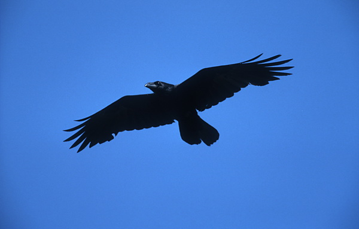
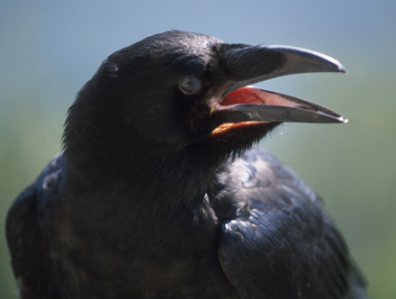

Kolkraben
Der Kolkrabe ist der größte Singvogel der Welt.

Kolkraben sind sehr intelligent.
Sie verwenden kleine Äste bei der Futtersuche als Werkzeug.
Außerdem sind sie sprachbegabt: Sie können Geräusche erzeugen,
die an Grunzen, Rülpsen oder Knarren erinnern.
Gern machen Sie auch die Stimmen anderer Tierarten nach,
etwa den Balzgesang des Auerhahns oder Hundegebell.

Zurück zum Inhaltsverzeichnis